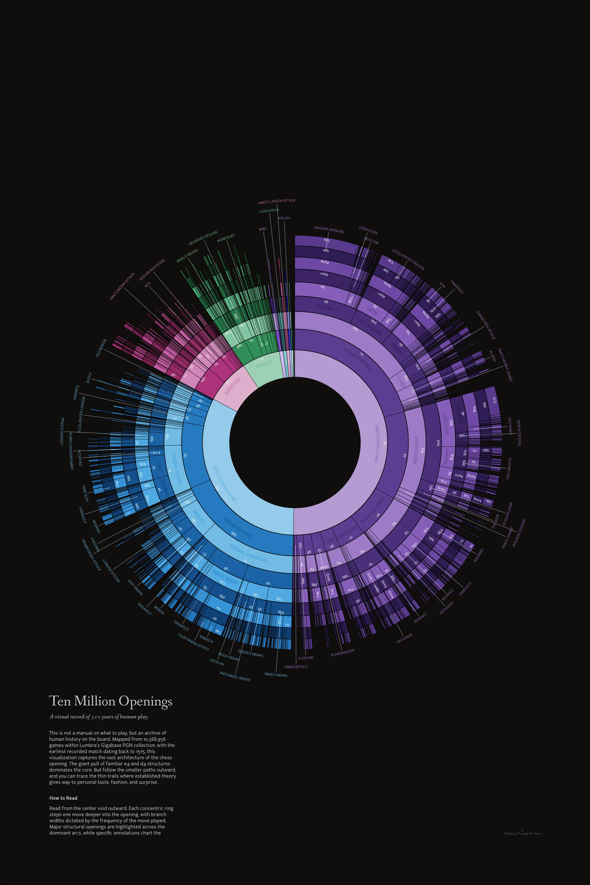

Whenever I share something I made, I get a lot of emails and comments, and by far the most common question is: “how did you make it?” Fair question! The honest answer is usually “slowly, and with a lot of fiddling”, but I figured it deserves a better answer than that.
So this is a “making of” post. It’s about a poster I just finished, Ten Million Openings, and by extension it’s about the chess openings visualization it grew out of. I’ve wanted to make a print version of my dataviz work for a long time. I’ve had a few printed for myself over the years, but this is the first one I’m actually putting up for sale (the first of hopefully many). Instead of just rehashing an old viz, I wanted to bring you along for the ride as I took something built for a browser and turned it into ink on paper.
This isn’t a tutorial or a step-by-step. It’s more of a high-level tour through the things I tried, the knobs I turned, and the decisions I landed on. If I’m being honest, I’m mostly winging it the whole time, and I think that’s part of the fun.
Where it started
Back in 2016 I wrote A Visual Look at 2 Million Chess Games, digging through 2,197,113 games from MillionBase. Out of everything in that post, the openings sunburst was the thing people kept coming back to. It got shared around a lot, and people spent a surprising amount of time just poking at it.
For me, it was an amazing way to explore chess openings. You hover over a slice and the board plays out the line, and you start to feel the shape of opening theory: how 1.e4 takes up half the world, how the Sicilian fans out into a hundred little branches, how some lines that sound popular are actually tiny slivers. It’s very tactile. I learned more about the openings I play (and the ones I don’t) from messing with that thing than from any book.
The idea is pretty simple. Every game starts at the center. Each ring outward is one more half-move (a “ply”), and the width of each slice is how many games went down that path. Big slices are the main roads, thin slices are the side streets.
The data side of this has always been pgnstats, a little PGN parser I wrote in Go for the original post. You point it at a PGN file and it chews through every game, building up the openings tree (and a bunch of other stats, like the heatmaps from the 2016 post) as it goes. It handles huge files like a champ, which matters when the file has millions of games in it. That’s a big part of why I could keep coming back to this: getting a fresh tree out of a new database is one command, and then all the fun happens on the drawing side.
The first public version actually came a little before the post, as part of chess-dataviz, a little D3 library I put together for these charts. Nothing crazy going on here: a default color scheme, thin white lines between slices, and move names on the big ones.
The 2016 post used that same library on a dark page, with a chessboard sitting in the middle of the circle that would play out whatever line you were hovering. Hover over an arc and you’d also get the opening name.
And then I just… kept coming back to it. I rewrote it in 2021, used a version of it for the 2022 Candidates recap, and eventually ended up building a custom app just to help me with the layout and all the knob turning while iterating on it. Every time I touched it I’d change something small, and over the years those small things added up.
Knobs
This is the part I think is the most interesting, and also the part nobody sees. A sunburst looks like one decision, but it’s really a pile of little ones, and every one of them changes the picture. The figures below are all drawn from the original 2 million game tree, with one thing changed at a time so you can see what each knob does.
How deep to go
The first question is how many half-moves to show. Go too shallow and it’s basically a pie chart: e4, d4, done. Go too deep and the outer rings turn into dust that you can’t read or even see.
The 2016 version showed 10 plies. At some point in 2018 I refactored the parser and, without really noticing, it started producing 9. The poster also has 9 rings. I’d love to tell you that was a carefully considered artistic choice, but I honestly don’t remember! It does look good though. Nine rings is just enough to walk you right up to the doorstep of the real named openings (the last ring of the Najdorf is 5.Nc3, one move short of 5…a6) without the outer ring falling apart.
What to throw away
With millions of games, there’s a very long tail of lines that were played once or twice. Some of those are real gems, and some are… questionable (I wonder who plays those?). Do you keep them?
In 2016 I cut anything played in less than 0.1% of games while parsing, so the smallest slice on that chart is still 2,199 games. That keeps things tidy, but it also hides the texture at the edges, which turns out to be one of the prettiest parts.
For the poster I went the other way: keep basically everything, and only skip slices at drawing time when they’re too thin to see. Fun fact, I don’t actually remember the exact threshold I used. So I measured the ring edges on the poster preview and worked backwards against a similar unpruned dataset, and it lands at “pretty much nothing pruned”. Which feels right: on paper you can see far finer detail than on a screen, and those hairline slivers at the edge are what make it look like a print and not a pie chart.
Squeezing the rings
If every ring had the same thickness, the inner rings would be tiny and the outer ones huge, which is exactly backwards. The center is where all the games are! So the radius uses a square root scale, which gives every ring the same area instead of the same thickness.
A side effect I like a lot: the hole in the middle isn’t a design decision, it’s the “starting position” ring, the root that every game passes through, which just doesn’t get drawn. With 9 rings, it ends up being about a third of the radius. That hole has been there since day one. In 2016 I put a chessboard in it, and for the poster I left it empty. More on that below.
Gaps and lines between slices
How you separate slices sounds like a nitpick, but it changes the whole feel. The original library drew thin white lines, which look great on a screen. The 2021 rewrite added small gaps between slices instead. Later on I switched to a very thin dark line, which lets the colors sit right next to each other and makes the thin slices at the edge read as texture instead of noise.
Color
The very first version used a stock color palette. Later I switched to Tableau colors, which are nicer but still feel like “a chart”. The color carries the first move: everything that starts with 1.e4 is one family, 1.d4 is another, and so on, with each ring getting slightly lighter or darker so you can still see the steps.
Move names vs opening names
On the interactive version, the arcs show the moves (e4, c5, Nf3…) and the opening names live in a tooltip. That’s great when you have a mouse. On paper, there’s no hover, so the names have to be on the sheet somewhere, and that was a whole thing (see below).
Board vs. no board
The board in the middle was one of my favorite parts of the original. You hover, it plays the line. But a board on a poster is just a static picture of a board, and it fights with everything around it for attention.
From browser to paper
Here’s where it gets interesting. I’d made the poster’s ancestor a dozen times by now, but a screen and a sheet of paper are very different beasts, and almost every interactive feature had to be replaced with something else.
That figure is still the 2 million game tree, just wearing print clothes. Some of the decisions I made for the real thing:
Data. First I needed more games. Back in 2016, MillionBase was the biggest free database around, so naturally I tried that first, but the link was down. Then I remembered that the owner of Caissabase had actually reached out to me at some point… about four years earlier. Oops. In the end I went with Lumbra’s Gigabase, which I found through the En Croissant database list. That’s 10,388,956 games, almost five times what I had in 2016, so a big improvement. The earliest game in there is from 1515, which is where the subtitle comes from: “A visual record of 510 years of human play.” I didn’t do any fancy filtering either, it all went through pgnstats with the default settings.
An empty center. In the end I left the hole empty. It gives your eye somewhere to rest, and honestly the circle reads better as one object without a board in the middle. Every game starts there anyway.
Background and color. A warm near-black instead of a pure black, and a custom palette instead of a stock one. 1.e4 is violet, 1.d4 is sky blue, 1.Nf3 is pink, 1.c4 is mint. I wanted it to look good on a wall first, and like a chart second. Fun to see that e4 takes up exactly half the circle in this dataset, d4 about a third, and the rest share what’s left.
Lines. Always-on hairlines between slices. With no mouse, the slices need to separate themselves.
Move names along the rings. On screen, the move labels stay upright so they’re easy to read. On the poster they follow the curve of each ring, which looks a lot more natural when you’re standing in front of it.
Opening names. This was the most work by far. The bigger openings get their names written inside the arcs. For the smaller ones out at the edges, there are about fifty little callouts with leader lines pointing to their slice. My little layout app handled the rendering and let me toggle each label on and off and drag it around, but the actual placement was all by hand. Lots of nudging something two pixels to the left, staring at it, and nudging it back.
Type. If memory serves, Fanwood and Junction, both from The League of Moveable Type.
Getting it printed. This part was way less glamorous than I expected. I print through Prodigi, and my first few attempts at fancy press-ready exports (PDF, TIFF, a giant 4x render) all got rejected. What worked in the end was one 24×36" PNG master, resampled carefully, printed on 240gsm ultra-matte paper. Then I ordered test prints and held my breath.
Ten Million Openings
And here it is!

It’s a little surreal to see something that started as a hover effect in a 2016 blog post hanging on a wall. Every slice is real games, every thin line out at the edge is someone, somewhere, trying something a bit different.
If you’d like one for yourself, or you know a chess player who’d love it, it’s available on Etsy. Buying one genuinely helps me keep making these (and keep coming back to this sunburst for another ten years). If not, I hope you enjoyed the peek behind the curtain anyway. Let me know what you think, and if you have questions about any of the knobs, ask away!
 A Visual Look at 2 Million Chess Games
A Visual Look at 2 Million Chess Games
 Visual Look at 2 Million Chess Games: Part 2
Visual Look at 2 Million Chess Games: Part 2